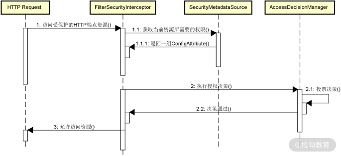
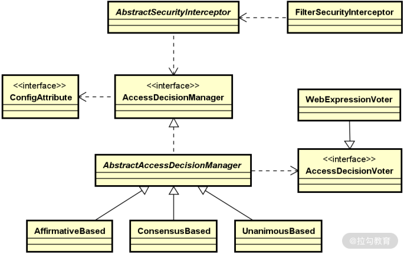
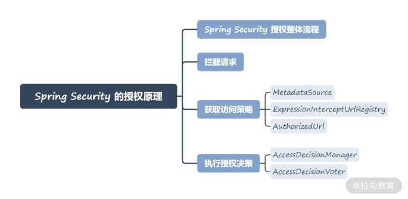

- 00 开篇词 Spring Security，为你的应用安全与职业之路保驾护航.md.html
- 01 顶级框架：Spring Security 是一款什么样的安全性框架？.md.html
- 02 用户认证：如何使用 Spring Security 构建用户认证体系？.md.html
- 03 认证体系：如何深入理解 Spring Security 用户认证机制？.md.html
- 04 密码安全：Spring Security 中包含哪些加解密技术？.md.html
- 05 访问授权：如何对请求的安全访问过程进行有效配置？.md.html
- 06 权限管理：如何剖析 Spring Security 的授权原理？.md.html
- 07 案例实战：使用 Spring Security 基础功能保护 Web 应用.md.html
- 08 管道过滤：如何基于 Spring Security 过滤器扩展安全性？.md.html
- 09 攻击应对：如何实现 CSRF 保护和跨域 CORS？.md.html
- 10 全局方法：如何确保方法级别的安全访问？.md.html
- 11 案例实战：使用 Spring Security 高级主题保护 Web 应用.md.html
- 12 开放协议：OAuth2 协议解决的是什么问题？.md.html
- 13 授权体系：如何构建 OAuth2 授权服务器？.md.html
- 14 资源保护：如何基于 OAuth2 协议配置授权过程？.md.html
- 15 令牌扩展：如何使用 JWT 实现定制化 Token？.md.html
- 16 案例实战：基于 Spring Security 和 Spring Cloud 构建微服务安全架构.md.html
- 17 案例实战：基于 Spring Security 和 OAuth2 实现单点登录.md.html
- 18 技术趋势：如何为 Spring Security 添加响应式编程特性？.md.html
- 19 测试驱动：如何基于 Spring Security 测试系统安全性？.md.html
- 20 结束语 以终为始，Spring Security 的学习总结.md.html
06 权限管理：如何剖析 Spring Security 的授权原理？
上一讲，我们分析了 Spring Security 中提供的授权功能。你可以发现使用这一功能的方法很简单，只需要基于 HttpSecurity 对象提供的一组工具方法就能实现复杂场景下的访问控制。但是，易于使用的功能往往内部实现都没有表面看起来那么简单，今天我就来和你一起深入分析授权功能背后的实现机制。针对授权功能，Spring Security 在实现过程中采用了很多优秀的设计理念和实现技巧，值得我们深入学习。
Spring Security 授权整体流程
我们先来简单回顾一下上一讲的内容。我们知道在 Spring Security 中，实现对所有请求权限控制的配置方法只需要如下所示的一行代码：
http.authorizeRequests();
我们可以结合 HTTP 请求的响应流程来理解这行代码的执行效果。当一个 HTTP 请求来到 Servlet 容器时，会被容器拦截，并添加一些附加的处理逻辑。在 Servlet 中，这种处理逻辑就是通过过滤器（Filter）来实现的，多个过滤器按照一定的顺序组合在一起就构成了一个过滤器链。关于过滤器的详细讨论我们会在 08 讲“管道过滤：如何基于 Spring Security 过滤器扩展安全性？”中展开，在本讲中，我们只需要知道 Spring Security 同样也基于过滤器拦截请求，从而实现对访问权限的限制即可。
在 Spring Security 中，存在一个叫 FilterSecurityInterceptor 的拦截器，它位于整个过滤器链的末端，核心功能是对权限控制过程进行拦截，以此判定该请求是否能够访问目标 HTTP 端点。FilterSecurityInterceptor 是整个权限控制的第一个环节，我们把它称为拦截请求。
我们对请求进行拦截之后，下一步就要获取该请求的访问资源，以及访问这些资源需要的权限信息。我们把这一步骤称为获取权限配置。在 Spring Security 中，存在一个 SecurityMetadataSource 接口，该接口保存着一系列安全元数据的数据源，代表权限配置的抽象。我们在上一讲中已经通过配置方法设置了很多权限信息，例如：
http.authorizeRequests().anyRequest().hasAuthority("CREATE");
请注意，http.authorizeRequests() 方法的返回值是一个 ExpressionInterceptUrlRegistry，anyRequest() 方法返回值是一个 AuthorizedUrl，而 hasAuthority() 方法返回的又是一个 ExpressionInterceptUrlRegistry。这些对象在今天的内容中都会介绍到。
SecurityMetadataSource 接口定义了一组方法来操作这些权限配置，具体权限配置的表现形式是ConfigAttribute 接口。通过 ExpressionInterceptUrlRegistry 和 AuthorizedUrl，我们能够把配置信息转变为具体的 ConfigAttribute。
当我们获取了权限配置信息后，就可以根据这些配置决定 HTTP 请求是否具有访问权限，也就是执行授权决策。Spring Security 专门提供了一个 AccessDecisionManager 接口完成该操作。而在 AccessDecisionManager 接口中，又把具体的决策过程委托给了 AccessDecisionVoter 接口。AccessDecisionVoter 可以被认为是一种投票器，负责对授权决策进行表决。
以上三个步骤构成了 Spring Security 的授权整体工作流程，可以用如下所示的时序图表示：

Spring Security 的授权整体工作流程
接下来，我们基于这张类图分别对拦截请求、获取权限配置、执行授权决策三个步骤逐一展开讲解。
拦截请求
作为一种拦截器，FilterSecurityInterceptor 实现了对请求的拦截。我们先来看它的定义，如下所示：
public class FilterSecurityInterceptor extends AbstractSecurityInterceptor implements Filter
FilterSecurityInterceptor 实现了 Servlet 的 Filter 接口，所以本质上也是一种过滤器，并实现了 Filter 接口的 invoke 方法。在它的 invoke 方法中，FilterSecurityInterceptor 自身并没有执行任何特殊的操作，只是获取了 HTTP 请求并调用了基类 AbstractSecurityInterceptor 中的 beforeInvocation() 方法对请求进行拦截：
public void invoke(FilterInvocation fi) throws IOException, ServletException {
…
InterceptorStatusToken token = super.beforeInvocation(fi);
…
super.afterInvocation(token, null);
}
AbstractSecurityInterceptor 中的 beforeInvocation() 方法非常长，我们把它裁剪之后，可以得到如下所示的主流程代码：
protected InterceptorStatusToken beforeInvocation(Object object) {
…
//获取 ConfigAttribute 集合
Collection< ConfigAttribute > attributes = this.obtainSecurityMetadataSource()
.getAttributes(object);
…
//获取认证信息
Authentication authenticated = authenticateIfRequired();
//执行授权
try {
this.accessDecisionManager.decide(authenticated, object, attributes);
}
catch (AccessDeniedException accessDeniedException) {
…
}
…
}
可以看到，上述操作从配置好的 SecurityMetadataSource 中获取当前请求所对应的 ConfigAttribute，即权限信息。那么，这个 SecurityMetadataSource 又是怎么来的呢？
获取访问策略
我们注意到在 FilterSecurityInterceptor 中定义了一个 FilterInvocationSecurityMetadataSource 变量，并通过一个 setSecurityMetadataSource() 方法进行注入，显然，这个变量就是一种 SecurityMetadataSource。
MetadataSource
通过翻阅 FilterSecurityInterceptor 的调用关系，我们发现初始化该类的地方是在 AbstractInterceptUrlConfigurer 类中，如下所示：
private FilterSecurityInterceptor createFilterSecurityInterceptor(H http,
FilterInvocationSecurityMetadataSource metadataSource,
AuthenticationManager authenticationManager) throws Exception {
FilterSecurityInterceptor securityInterceptor = new FilterSecurityInterceptor();
securityInterceptor.setSecurityMetadataSource(metadataSource);
securityInterceptor.setAccessDecisionManager(getAccessDecisionManager(http));
securityInterceptor.setAuthenticationManager(authenticationManager);
securityInterceptor.afterPropertiesSet();
return securityInterceptor;
}
而 FilterInvocationSecurityMetadataSource 对象的创建则是基于 AbstractInterceptUrlConfigurer 中提供的抽象方法：
abstract FilterInvocationSecurityMetadataSource createMetadataSource(H http);
这个方法的实现过程由 AbstractInterceptUrlConfigurer 的子类 ExpressionUrlAuthorizationConfigurer 提供，如下所示：
@Override
ExpressionBasedFilterInvocationSecurityMetadataSource createMetadataSource(H http) {
LinkedHashMap<RequestMatcher, Collection<ConfigAttribute>> requestMap = REGISTRY.createRequestMap();
…
return new ExpressionBasedFilterInvocationSecurityMetadataSource(requestMap,
getExpressionHandler(http));
}
请你注意：这里有个REGISTRY 对象，它的类型是 ExpressionInterceptUrlRegistry。这和前面介绍的内容相对应，我们在前面已经提到 http.authorizeRequests() 方法的返回值类型就是这个 ExpressionInterceptUrlRegistry。
ExpressionInterceptUrlRegistry
我们继续看 ExpressionInterceptUrlRegistry 中 createRequestMap() 的实现过程，如下所示：
final LinkedHashMap<RequestMatcher, Collection<ConfigAttribute>> createRequestMap() {
…
LinkedHashMap<RequestMatcher, Collection<ConfigAttribute>> requestMap = new LinkedHashMap<>();
for (UrlMapping mapping : getUrlMappings()) {
RequestMatcher matcher = mapping.getRequestMatcher();
Collection<ConfigAttribute> configAttrs = mapping.getConfigAttrs();
requestMap.put(matcher, configAttrs);
}
return requestMap;
}
这段代码把配置的 http.authorizeRequests() 转化为 UrlMappings，然后进一步转换为 RequestMatcher 与 Collection<ConfigAttribute> 之间的映射关系。那么，创建这些 UrlMappings 的入口又在哪里呢？同样也是在 ExpressionUrlAuthorizationConfigurer 中的 interceptUrl 方法，如下所示：
private void interceptUrl(Iterable<? extends RequestMatcher> requestMatchers,
Collection<ConfigAttribute> configAttributes) {
for (RequestMatcher requestMatcher : requestMatchers) {
REGISTRY.addMapping(new AbstractConfigAttributeRequestMatcherRegistry.UrlMapping(
requestMatcher, configAttributes));
}
}
AuthorizedUrl
我们进一步跟踪代码的运行流程，发现上述 interceptUrl() 方法的调用入口是在如下所示的 access() 方法中：
public ExpressionInterceptUrlRegistry access(String attribute) {
if (not) {
attribute = "!" + attribute;
}
interceptUrl(requestMatchers, SecurityConfig.createList(attribute));
return ExpressionUrlAuthorizationConfigurer.this.REGISTRY;
}
结合上一讲的内容，我们不难理解这个 access() 方法的作用。请注意，这个方法位于 AuthorizedUrl 类中，而我们执行 http.authorizeRequests().anyRequest() 方法的返回值就是这个 AuthorizedUrl。在该类中定义了一批我们已经熟悉的配置方法，例如 hasRole、hasAuthority 等，而这些方法在内部都是调用了上面这个 access() 方法：
public ExpressionInterceptUrlRegistry hasRole(String role) {
return access(ExpressionUrlAuthorizationConfigurer.hasRole(role));
}
public ExpressionInterceptUrlRegistry hasAuthority(String authority) {
return access(ExpressionUrlAuthorizationConfigurer.hasAuthority(authority));
}
讲到这里，获取访问策略的流程就基本完成了，我们得到了一组代表权限的 ConfigAttribute 对象。
执行授权决策
执行授权决策的前提是获取认证信息，因此，我们在 FilterSecurityInterceptor 的拦截流程中发现了如下一行执行认证操作的代码：
Authentication authenticated = authenticateIfRequired();
这里的 authenticateIfRequired() 方法执行认证操作，该方法实现如下：
private Authentication authenticateIfRequired() {
Authentication authentication = SecurityContextHolder.getContext().getAuthentication();
…
authentication = authenticationManager.authenticate(authentication);
…
SecurityContextHolder.getContext().setAuthentication(authentication);
return authentication;
}
可以看到认证逻辑并不复杂，首先根据上下文对象中是否存在 Authentication 对象来判断当前用户是否已通过认证。如果尚未通过身份认证，则调用 AuthenticationManager 进行认证，并把 Authentication 存储到上下文对象中。关于用户认证流程的详细介绍你可以回顾“认证体系：如何深入理解 Spring Security 的认证机制？”中的内容。
AccessDecisionManager
AccessDecisionManager 是用来进行授权决策的入口，其最核心的方法就是如下所示的 decide() 方法，前面我们已经看到了这个方法的执行过程：
this.accessDecisionManager.decide(authenticated, object, attributes);
而在前面介绍 AbstractInterceptUrlConfigurer 类时，我们同样发现了获取和创建 AccessDecisionManager 的对应方法：
private AccessDecisionManager getAccessDecisionManager(H http) {
if (accessDecisionManager == null) {
accessDecisionManager = createDefaultAccessDecisionManager(http);
}
return accessDecisionManager;
}
private AccessDecisionManager createDefaultAccessDecisionManager(H http) {
AffirmativeBased result = new AffirmativeBased(getDecisionVoters(http));
return postProcess(result);
}
显然，如果没有设置自定义的 AccessDecisionManager，默认会创建一个 AffirmativeBased 实例。AffirmativeBased 的 decide() 方法如下所示：
public void decide(Authentication authentication, Object object, Collection<ConfigAttribute> configAttributes) throws AccessDeniedException {
int deny = 0;
for (AccessDecisionVoter voter : getDecisionVoters()) {
int result = voter.vote(authentication, object, configAttributes);
switch (result) {
case AccessDecisionVoter.ACCESS_GRANTED:
return;
case AccessDecisionVoter.ACCESS_DENIED:
deny++;
break;
default:
break;
}
}
if (deny > 0) {
throw new AccessDeniedException(messages.getMessage(
"AbstractAccessDecisionManager.accessDenied", "Access is denied"));
}
checkAllowIfAllAbstainDecisions();
}
可以看到，这里把真正计算是否具有访问权限的过程委托给了一组 AccessDecisionVoter 对象，只要其中有任意一个的结果是拒绝，就会抛出一个 AccessDeniedException。
AccessDecisionVoter
AccessDecisionVoter 同样是一个接口，提供了如下所示的 vote() 方法：
int vote(Authentication authentication, S object,
Collection<ConfigAttribute> attributes);
我们再次在 AbstractInterceptUrlConfigurer 类中找到了获取 AccessDecisionVoter 的 getDecisionVoters() 抽象方法定义，如下所示：
abstract List<AccessDecisionVoter<?>> getDecisionVoters(H http);
同样是在它的子类 ExpressionUrlAuthorizationConfigurer 中，我们找到了这个抽象方法的具体实现：
@Override
List<AccessDecisionVoter<?>> getDecisionVoters(H http) {
List<AccessDecisionVoter<?>> decisionVoters = new ArrayList<>();
WebExpressionVoter expressionVoter = new WebExpressionVoter();
expressionVoter.setExpressionHandler(getExpressionHandler(http));
decisionVoters.add(expressionVoter);
return decisionVoters;
}
可以看到，这里创建的 AccessDecisionVoter 实际上都是 WebExpressionVoter，它的 vote() 方法如下所示：
public int vote(Authentication authentication, FilterInvocation fi, Collection<ConfigAttribute> attributes) {
…
WebExpressionConfigAttribute weca = findConfigAttribute(attributes);
…
EvaluationContext ctx = expressionHandler.createEvaluationContext(authentication, fi);
ctx = weca.postProcess(ctx, fi);
return ExpressionUtils.evaluateAsBoolean(weca.getAuthorizeExpression(), ctx) ? ACCESS_GRANTED: ACCESS_DENIED;
}
这里出现了一个 SecurityExpressionHandler，看类名就可以发现与 Spring 中的表达式语言相关，它会构建一个用于评估的上下文对象 EvaluationContext。而 ExpressionUtils.evaluateAsBoolean() 方法就是根据从 WebExpressionConfigAttribute 获取的授权表达式，以及这个 EvaluationContext 上下文对象完成最终结果的评估：
public static boolean evaluateAsBoolean(Expression expr, EvaluationContext ctx) {
try {
return expr.getValue(ctx, Boolean.class);
}
catch (EvaluationException e) {
…
}
}
显然，最终的评估过程只是简单使用了 Spring 所提供的 SpEL 表达式语言。
作为总结，我们把这一流程中涉及的核心组件以类图的形式进行了梳理，如下图所示：

Spring Security 授权相关核心类图
小结与预告
这一讲我们关注的是 Spring Security 授权机制的实现原理，我们把整个授权过程拆分成拦截请求、获取访问策略和执行授权决策这三大步骤。针对每一个步骤，都涉及了一组核心类及其它们之间的交互关系。针对这些核心类的讲解思路是围绕着上一讲介绍的基本配置方法展开讨论的，确保实际应用能与源码分析衔接在一起。
本讲内容总结如下：

最后给你留一道思考题：在 Spring Security 中，你能简要描述整个授权机制的执行过程吗？